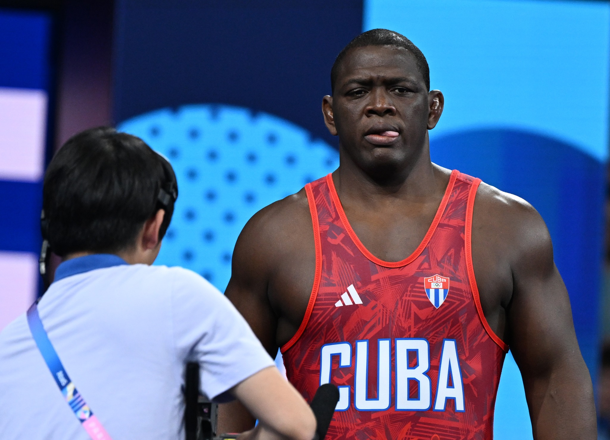

Poucos atletas conseguiram transformar uma modalidade em território de domínio tão absoluto quanto Mijaín López. O cubano construiu uma trajetória extraordinária na luta greco-romana e encerrou a carreira com uma marca inédita: cinco medalhas de ouro consecutivas na mesma prova olímpica, conquistadas em Pequim 2008, Londres 2012, Rio 2016, Tóquio 2020 e Paris 2024.
A despedida aconteceu em 6 de agosto de 2024, na Arena Champ-de-Mars, em Paris. Aos 41 anos, López derrotou Yasmani Acosta, representante do Chile, por 6 a 0 na final da categoria até 130 kg. Depois da vitória, retirou as sapatilhas e as deixou no centro do tapete, gesto tradicional que simboliza a aposentadoria na luta olímpica.
O momento encerrou uma trajetória que atravessou seis edições dos Jogos e colocou López em uma posição singular na história das Olimpíadas e de seus maiores campeões. Até Paris 2024, nenhum atleta havia conquistado cinco ouros na mesma prova dos Jogos Olímpicos de Verão.
O começo e a primeira Olimpíada
Nascido em 20 de agosto de 1982, em Cuba, Mijaín López Núñez se especializou na luta greco-romana, modalidade em que os competidores utilizam principalmente braços e tronco para executar projeções, controlar o adversário e buscar a vitória.
Diferentemente da luta livre, a greco-romana não permite agarrar as pernas do adversário nem utilizá-las ativamente para executar golpes. Essa característica torna fundamentais o posicionamento, a força da parte superior do corpo, o equilíbrio e a capacidade de realizar projeções.
López desenvolveu essas características e passou a competir na divisão dos pesos mais elevados, inicialmente até 120 kg e, posteriormente, até 130 kg, acompanhando a mudança das categorias internacionais.
Sua estreia olímpica aconteceu em Atenas 2004. Na ocasião, terminou em quinto lugar, ainda distante do domínio que exerceria nas edições seguintes. A experiência, porém, marcou o início de uma trajetória que transformaria a categoria dos superpesados.
A história da luta greco-romana nas Olimpíadas
A disciplina é uma das modalidades mais tradicionais dos Jogos Olímpicos modernos. Sua estreia aconteceu em Atenas 1896, na primeira edição das Olimpíadas da era moderna, quando integrou o programa de nove esportes. Naquela época, a competição não tinha divisão por categorias de peso, e o alemão Carl Schuhmann, que também competia na ginástica artística, conquistou o primeiro título olímpico da modalidade.
Embora a luta já estivesse presente nos Jogos Olímpicos da Antiguidade desde 708 a.C., a versão greco-romana moderna foi desenvolvida na Europa, principalmente durante os séculos XVIII e XIX. Seu nome remete às tradições de combate da Grécia e de Roma, mas suas regras foram estruturadas muitos séculos depois.
Apesar de participar da primeira Olimpíada moderna, a luta greco-romana ficou fora dos Jogos de Paris 1900 e St. Louis 1904. Na edição norte-americana, apenas a luta livre foi disputada. A greco-romana retornou em Londres 1908 e permaneceu no programa olímpico das edições seguintes. A partir de Antuérpia 1920, passou a ser disputada regularmente ao lado da luta livre, consolidando seu espaço entre as modalidades tradicionais dos Jogos.
Ao longo dessa trajetória, diferentes gerações produziram campeões históricos. Um dos maiores foi o russo Aleksandr Karelin, que conquistou três medalhas de ouro consecutivas em Seul 1988, Barcelona 1992 e Atlanta 1996. Considerado uma das grandes referências técnicas e físicas da luta greco-romana, Karelin tentou conquistar o quarto título em Sydney 2000, mas foi derrotado pelo norte-americano Rulon Gardner na final, ficando com a prata.
Foi nesse cenário de tradição olímpica e de campeões lendários que Mijaín López construiu sua própria história. O cubano estreou em Atenas 2004, terminou na quinta colocação e iniciou, quatro anos depois, uma sequência que nenhuma outra geração de lutadores havia conseguido alcançar.
O quinto título, conquistado na França, levou o feito de López além dos limites da própria luta greco-romana. Em 128 anos de Jogos Olímpicos modernos, nenhum atleta havia conseguido conquistar cinco medalhas de ouro na mesma prova em cinco edições consecutivas dos Jogos de Verão. A vitória por 6 a 0 sobre Yasmani Acosta, do Chile, na final de Paris 2024, transformou o cubano no primeiro a alcançar essa marca.
A dimensão histórica do recorde ganha ainda mais força quando se observa que a luta greco-romana faz parte do programa olímpico desde 1896 e já consagrou gerações de grandes campeões. López superou a marca de três títulos de Karelin e também ultrapassou o feito da japonesa Kaori Icho, tetracampeã olímpica na luta livre feminina.
Mais de um século depois da primeira competição de luta greco-romana dos Jogos modernos, o cubano estabeleceu um novo parâmetro de excelência na modalidade. Sua trajetória reuniu cinco ouros olímpicos, cinco títulos mundiais e uma longevidade competitiva extraordinária. Ao deixar as sapatilhas no centro do tapete em Paris, aos 41 anos, Mijaín López encerrou não apenas uma carreira vitoriosa, mas um dos capítulos mais impressionantes da história olímpica.
A primeira medalha de ouro olímpica
O primeiro grande marco nas Olimpíadas de López aconteceu nos Jogos de Pequim, em 2008. Competindo na categoria até 120 kg, o cubano chegou à decisão e derrotou o russo Khasan Baroev, então campeão olímpico.
A conquista teve uma importância especial porque Baroev havia sido um de seus grandes adversários nas competições internacionais. Ao superá-lo em uma final olímpica, López confirmou sua condição de protagonista da luta greco-romana mundial.
O ouro em Pequim inaugurou uma sequência que permaneceria intacta nas quatro edições seguintes dos Jogos.
O bicampeonato e a consolidação mundial
Quatro anos depois, López chegou aos Jogos Olímpicos de Londres com a responsabilidade de defender o título conquistado na China.
Na decisão da categoria até 120 kg, enfrentou o estoniano Heiki Nabi e voltou a conquistar a medalha de ouro.
O bicampeonato consolidou o cubano entre os grandes nomes da luta olímpica. Mais do que conquistar títulos isolados, López demonstrava capacidade de manter o desempenho no cenário internacional durante diferentes ciclos de preparação.
Entre Pequim e Londres, também enfrentou adversários importantes em Campeonatos Mundiais, incluindo o turco Riza Kayaalp, que se tornaria um dos principais rivais de sua carreira.
O tricampeonato diante de Riza Kayaalp
Os Jogos Olímpicos do Rio de Janeiro ofereceram um dos confrontos mais significativos da carreira de López.
Na final da categoria até 130 kg, o cubano enfrentou Riza Kayaalp, da Turquia, que havia lhe derrotado na decisão do Campeonato Mundial de 2015.
A resposta veio no tapete olímpico. Com uma atuação dominante, López venceu por 6 a 0 e conquistou sua terceira medalha de ouro consecutiva.
O confronto teve um início decisivo. O cubano conseguiu uma projeção que lhe deu quatro pontos e ampliou rapidamente a vantagem. Kayaalp não encontrou respostas suficientes para reverter o resultado.
Ao conquistar o tricampeonato, López igualou feitos de grandes campeões da luta greco-romana, como Aleksandr Karelin e Carl Westergren. Sua comemoração no Rio, com passos de dança sobre o tapete, também marcou aquela edição dos Jogos.
O quarto ouro e a entrada definitiva para a história
A quarta conquista olímpica aconteceu nos Jogos de Tóquio 2020, realizados em 2021 devido ao adiamento provocado pela pandemia.
Aos 38 anos, López enfrentou o georgiano Iakobi Kajaia na final dos 130 kg e venceu por 5 a 0.
A campanha japonesa teve outra particularidade: o cubano terminou sua participação olímpica sem conceder pontos aos adversários.
Antes da decisão, também havia eliminado Riza Kayaalp, mantendo a superioridade sobre seu antigo rival nos encontros olímpicos.
Com o quarto ouro, López igualou a marca da japonesa Kaori Icho, que havia conquistado quatro títulos olímpicos na luta feminina. Naquele momento, ambos pertenciam ao grupo extremamente restrito de atletas capazes de vencer a mesma prova em quatro edições dos Jogos.
Mesmo assim, a história do cubano ainda não estava encerrada.
A campanha completa do quinto ouro histórico
O capítulo definitivo começou a ser construído quando Mijaín López anunciou, em maio de 2023, sua intenção de retornar aos Jogos Olímpicos em busca de uma quinta medalha de ouro.
Havia um desafio considerável. O lutador estava afastado das competições internacionais desde Tóquio e precisaria enfrentar adversários que continuavam ativos no circuito mundial.
Em Paris, López disputou quatro combates na categoria até 130 kg:
- Oitavas de final — venceu Lee Seung-chan, da Coreia do Sul, por 7 a 0.
- Quartas de final — venceu Amin Mirzazadeh, do Irã, por 3 a 1.
- Semifinal — venceu Sabah Shariati, do Azerbaijão, por 4 a 1.
- Final — venceu Yasmani Acosta, do Chile, por 6 a 0.
O confronto das quartas de final foi especialmente importante. Mirzazadeh chegava como campeão mundial e representava um dos obstáculos mais fortes no caminho do cubano.
Na semifinal, López superou Shariati, medalhista de bronze nos Jogos do Rio de Janeiro em 2016. A classificação garantiu sua quinta final olímpica consecutiva.
Na decisão, o adversário foi Yasmani Acosta, cubano de nascimento que passou a representar o Chile. Os dois já haviam compartilhado experiências de treinamento, o que deu uma dimensão particular ao encontro.
López controlou o confronto, construiu a vantagem e terminou com uma vitória por 6 a 0. Acosta, por sua vez, conquistou a primeira medalha olímpica da história do Chile na luta.
O resultado confirmou um recorde que atravessa todas as modalidades do programa olímpico de verão: cinco títulos consecutivos na mesma prova individual.
A sequência começou quando López tinha 25 anos, em Pequim, e terminou aos 41, em Paris, demonstrando uma longevidade excepcional em uma modalidade de grande exigência física.
Uma carreira além das Olimpíadas
Embora os cinco ouros olímpicos representam seu feito mais conhecido, a trajetória de Mijaín López também inclui resultados expressivos nos Campeonatos Mundiais de luta.
O cubano conquistou cinco títulos mundiais:
- 2005
- 2007
- 2009
- 2010
- 2014
Além dos títulos, López conquistou três medalhas de prata em Mundiais, nas edições de 2006, 2011 e 2015.
Uma das características mais impressionantes de sua carreira foi a capacidade de permanecer competitivo mesmo quando enfrentava mudanças de geração.
Riza Kayaalp foi um dos poucos adversários capazes de derrotá-lo em decisões mundiais. O turco venceu López nas finais de 2011 e 2015, mas o cubano respondeu com importantes vitórias olímpicas nos anos seguintes.
Esse histórico ajuda a mostrar que a carreira do pentacampeão não foi construída sem adversidades. Seu domínio surgiu de uma sucessão de confrontos contra atletas que também conquistaram títulos internacionais.
O recorde que nem outros gigantes olímpicos alcançaram
O tamanho da conquista de López fica ainda mais evidente quando comparado às grandes referências olímpicas.
Michael Phelps, maior medalhista da história dos Jogos Olímpicos, conquistou 23 medalhas de ouro na natação. Entretanto, mesmo com sua coleção extraordinária, não venceu a mesma prova em cinco edições consecutivas.
A trajetória do nadador norte-americano, detalhada na história de Michael Phelps e seus recordes olímpicos, permite compreender a diferença entre acumular o maior número de medalhas e manter a supremacia na mesma disputa ao longo de cinco Jogos.
Antes de Paris, atletas como Phelps, Carl Lewis, Al Oerter e Kaori Icho integravam o grupo de campeões que haviam conquistado quatro ouros na mesma prova.
Mijaín López ultrapassou essa marca.
O feito é ainda mais significativo considerando que a luta greco-romana envolve confrontos diretos, nos quais um erro de posicionamento ou uma ação bem executada pelo adversário pode determinar o resultado.
Nesse cenário, atravessar cinco ciclos olímpicos consecutivos sem perder a disputa pelo ouro representa uma combinação rara de excelência técnica, preparação física e longevidade.
A aposentadoria: as sapatilhas deixadas no tapete
A despedida em Paris 2024 foi tão simbólica quanto a conquista.
Depois de derrotar Yasmani Acosta, López comemorou com sua equipe técnica e recebeu o reconhecimento do público. Em seguida, retirou as sapatilhas utilizadas na luta e as colocou no centro do tapete.
O gesto é uma tradição da modalidade e representa o encerramento da carreira competitiva.
Não se tratava apenas de uma homenagem. A decisão marcava oficialmente a despedida do atleta que havia se tornado uma lenda do esporte.
López também dedicou a conquista ao pai, já falecido, e reconheceu a importância de seus familiares e treinadores para a construção de sua trajetória.
A imagem das sapatilhas deixadas no tapete se tornou o símbolo de sua última participação olímpica e de uma aposentadoria acompanhada por um recorde inédito.
O legado para Cuba e o esporte mundial
A importância de Mijaín López ultrapassa a luta greco-romana. Para Cuba, sua trajetória representa uma das maiores realizações individuais da história esportiva do país.
O cubano construiu sua carreira em uma modalidade que nem sempre recebe a mesma exposição internacional de esportes como futebol, basquete, tênis ou atletismo, mas alcançou uma marca que nenhuma dessas modalidades havia produzido na mesma prova olímpica individual.
Sua história também demonstra que a grandeza olímpica não depende exclusivamente da quantidade total de medalhas. A continuidade das conquistas, a capacidade de enfrentar adversários de diferentes gerações e a resistência ao desgaste físico são elementos igualmente importantes.
López começou sua história olímpica em Atenas, quando terminou em quinto lugar. Depois conquistou cinco ouros consecutivos, atravessou diferentes ciclos esportivos e encerrou a carreira sem conhecer a derrota nos Jogos desde 2004.
Quando deixou suas sapatilhas no tapete de Paris, em agosto de 2024, Mijaín López já não precisava disputar outro combate para provar sua grandeza. O cubano havia conquistado algo que permaneceu inalcançável para gerações de campeões olímpicos: cinco medalhas de ouro consecutivas na mesma prova.
Seu nome entrou definitivamente para a história como uma das maiores referências de domínio, longevidade e excelência do esporte mundial.